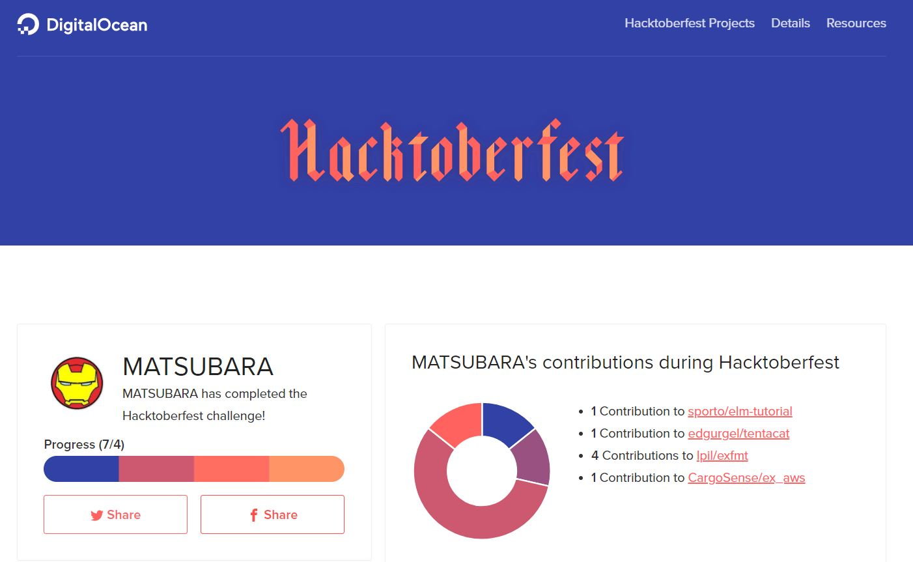

Hacktoberfest 2017 なので PR を4つ以上出してみた
出しました(完)

もう少し中身を書きます(笑)
Hacktoberfest is 何？
DegitalOcean というアメリカの企業(本業は VPS などのクラウド事業)が，ここ2,3年の間，毎年この時期に開催している OSS 活動促進イベントです． 期間内(10月中)に任意のパブリックリポジトリへプルリクエスト(以下 PR)を4つ以上送ると，オリジナルTシャツプレゼント！というものみたいです． 例年の報告記事を見ると，ステッカーもついてくるみたいですね．
ぼくは今年知りました． Twitter サーフィンをしてる時に．
ちなみに，去年は PR だしたことをツイートする必要があったらしいが，今年はする必要ないみたい． hacktoberfest ラベルも初心者用ってだけで関係ないみたい．
参加方法
わざわざ説明することでもないんだけど
- 公式サイトへいく
- Start Hacking をクリック
- GitHub アカウントを認証(無いなら作る)
- 必要な個人情報を入力(名前とか入力した気がする，忘れた)
あとは PR を出すだけ
進捗の確認
ログインして，公式ページの Check your Progress をクリックかココの一番下．
10月の最初の方には無かった気がする． それまでは Hacktoberfest Checker を使ってた．
hacktoberfest.digitalocean.com/stats/username の username に参加者の GitHub アカウントを入力すれば他人のも見れる(検索バー作ればいいのに)．
例えば，ぼくの https://hacktoberfest.digitalocean.com/stats/matsubara0507
出した PR
現時点で4つのリポジトリに計7つです．
- CargoSense/ex_aws#491
- lpil/exfmt#88
- lpil/exfmt#89
- lpil/exfmt#90
- lpil/exfmt#91
- edgurgel/tentacat
- sporto/elm-tutorial#189
ほとんど 8,9月に「出そうかなぁ」とだけ思って放置してたモノなので，半分ズルですね．
計らずして色んなパターンの PR を送った．
- CargoSense/ex_aws は型ヒントの Typo の修正
- lpil/exfmt は依存関係のバージョンアップによるテストのエラーの修正(依存している Elixir のパーサーがバージョンアップしたせい)
- edgurgel/tentacat は機能追加
- sporto/elm-tutorial はテキストの Typo などの修正
最後のテキストの修正は個人的に穴場な気がする． 最近は Web チュートリアルの元コードを GitHub で管理してるのが多い(Elixir School とか)． こういうの日本語訳は意外と誤字脱字や誤訳，あと本家(英語)のバージョンアップを追えてたりしないので狙い目なきがする．
ちなみに
実はこの後に，自分のリポジトリに，テストのテストのために PR を投げたらそれもカウントされてしまった． しなくていいのに．
あと，どうやってTシャツの送り先の住所教えるのかなぁ…？と思ってたが，調べた感じ後でメールするらしい．
おしまい
ためてなくても，月に4つぐらいは OSS に PR を送れるようなエンジニアに成りたいです．